Section 10 Regression
10.1 Note
Because of the shoterned time we only discussed examples with lm(); interface to glm() works in a very similar way - look in the references that I e-mailed to you earlier.
10.2 Load data
my_data.df <- read.table("results.tsv",
sep="\t",quote="",
header=T)10.3 Explore data
dim(my_data.df)## [1] 1000 3str(my_data.df)## 'data.frame': 1000 obs. of 3 variables:
## $ y: num -2.6 -19.1 40.7 14.1 30.6 ...
## $ x: num 48.5 20.2 47.5 44.3 60.1 ...
## $ f: Factor w/ 2 levels "A","B": 1 1 1 1 1 1 1 1 1 1 ...colnames(my_data.df)## [1] "y" "x" "f"head(my_data.df)## y x f
## 1 -2.601017 48.45296 A
## 2 -19.080882 20.17205 A
## 3 40.684370 47.51981 A
## 4 14.132072 44.33171 A
## 5 30.603842 60.14332 A
## 6 39.805518 94.58283 Asummary(my_data.df)## y x f
## Min. :-76.493 Min. : 0.06282 A:500
## 1st Qu.: 6.056 1st Qu.:27.93117 B:500
## Median : 25.692 Median :53.83435
## Mean : 24.937 Mean :52.26297
## 3rd Qu.: 44.360 3rd Qu.:77.64114
## Max. :118.265 Max. :99.64583any(is.na(my_data.df))## [1] FALSEggplot(data=my_data.df,aes(x=x,y=y,color=f)) +
geom_point() +
geom_smooth(method=lm)## `geom_smooth()` using formula 'y ~ x'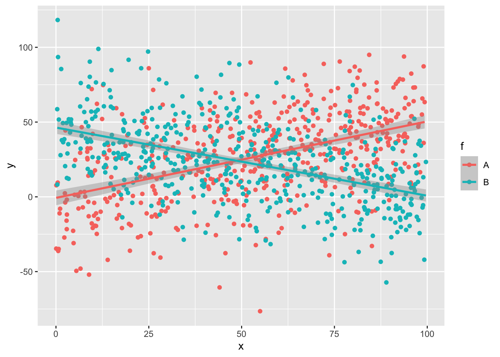
10.4 Impute if needed
x <- c(1,2,5,NA,NA)
is.na(x)## [1] FALSE FALSE FALSE TRUE TRUEsum(is.na(x))## [1] 2sum(is.na(x))/length(x)## [1] 0.4any(is.na(x))## [1] TRUEmean_x <- mean(x, na.rm = T)
mean_x -> x[is.na(x)]
x## [1] 1.000000 2.000000 5.000000 2.666667 2.666667rm(x)10.5 Linear modelling
10.5.1 Single term
model_1 <- lm(y~x, data=my_data.df)
summary(model_1)##
## Call:
## lm(formula = y ~ x, data = my_data.df)
##
## Residuals:
## Min 1Q Median 3Q Max
## -101.476 -19.094 0.934 19.528 94.194
##
## Coefficients:
## Estimate Std. Error t value Pr(>|t|)
## (Intercept) 24.06291 1.88081 12.794 <2e-16 ***
## x 0.01673 0.03163 0.529 0.597
## ---
## Signif. codes: 0 '***' 0.001 '**' 0.01 '*' 0.05 '.' 0.1 ' ' 1
##
## Residual standard error: 28.36 on 998 degrees of freedom
## Multiple R-squared: 0.0002802, Adjusted R-squared: -0.0007215
## F-statistic: 0.2797 on 1 and 998 DF, p-value: 0.597plot(model_1)
 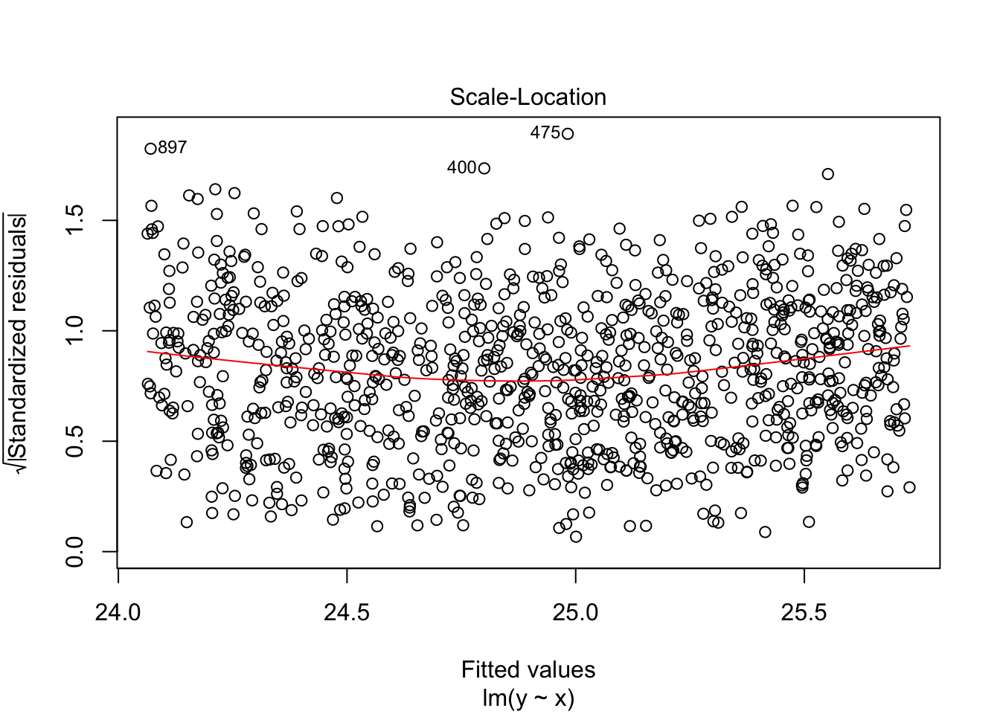
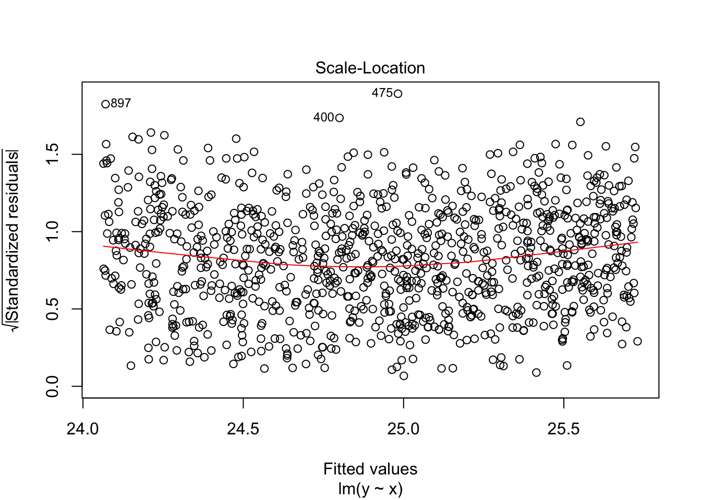
plot(y~x,data=my_data.df)
abline(model_1, col="red")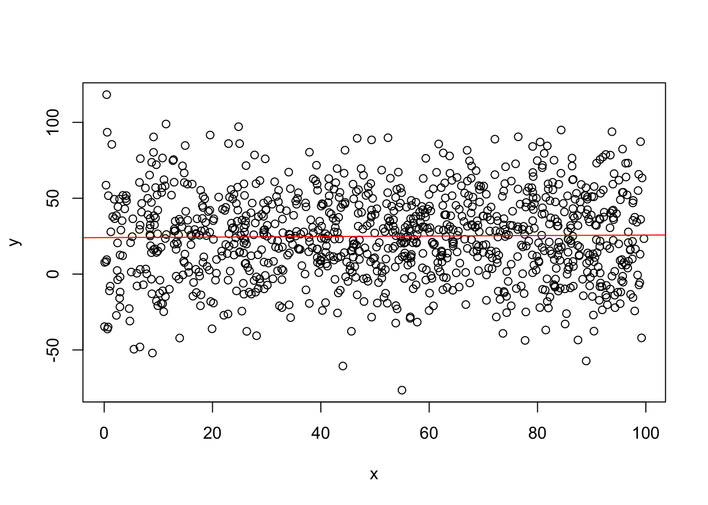
10.5.2 Multiple terms without interaction
model_2 <- lm(y~x+f, data=my_data.df)
#equivalent: note using dot for ALL terms
model_2_dot <- lm(y~., data=my_data.df)
summary(model_2)##
## Call:
## lm(formula = y ~ x + f, data = my_data.df)
##
## Residuals:
## Min 1Q Median 3Q Max
## -103.252 -18.959 0.964 19.444 95.818
##
## Coefficients:
## Estimate Std. Error t value Pr(>|t|)
## (Intercept) 26.01050 2.11764 12.283 <2e-16 ***
## x 0.01361 0.03162 0.431 0.6669
## fB -3.56959 1.79341 -1.990 0.0468 *
## ---
## Signif. codes: 0 '***' 0.001 '**' 0.01 '*' 0.05 '.' 0.1 ' ' 1
##
## Residual standard error: 28.32 on 997 degrees of freedom
## Multiple R-squared: 0.004237, Adjusted R-squared: 0.002239
## F-statistic: 2.121 on 2 and 997 DF, p-value: 0.1204summary(model_2_dot)##
## Call:
## lm(formula = y ~ ., data = my_data.df)
##
## Residuals:
## Min 1Q Median 3Q Max
## -103.252 -18.959 0.964 19.444 95.818
##
## Coefficients:
## Estimate Std. Error t value Pr(>|t|)
## (Intercept) 26.01050 2.11764 12.283 <2e-16 ***
## x 0.01361 0.03162 0.431 0.6669
## fB -3.56959 1.79341 -1.990 0.0468 *
## ---
## Signif. codes: 0 '***' 0.001 '**' 0.01 '*' 0.05 '.' 0.1 ' ' 1
##
## Residual standard error: 28.32 on 997 degrees of freedom
## Multiple R-squared: 0.004237, Adjusted R-squared: 0.002239
## F-statistic: 2.121 on 2 and 997 DF, p-value: 0.1204plot(model_2)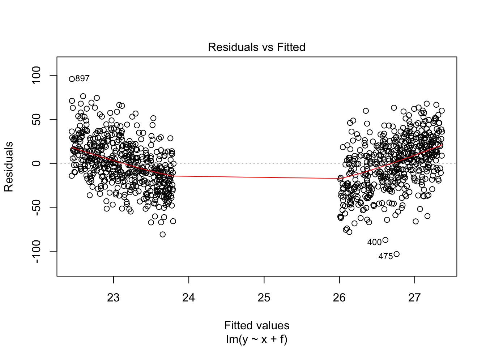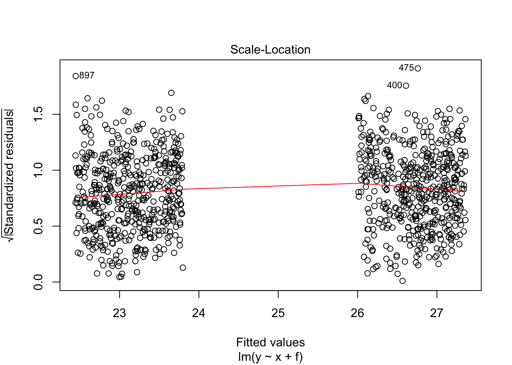
plot(y~x,col=as.integer(f),data=my_data.df)
abline(model_2, col="blue", lwd=3)## Warning in abline(model_2, col = "blue", lwd = 3): only using the first two of 3
## regression coefficients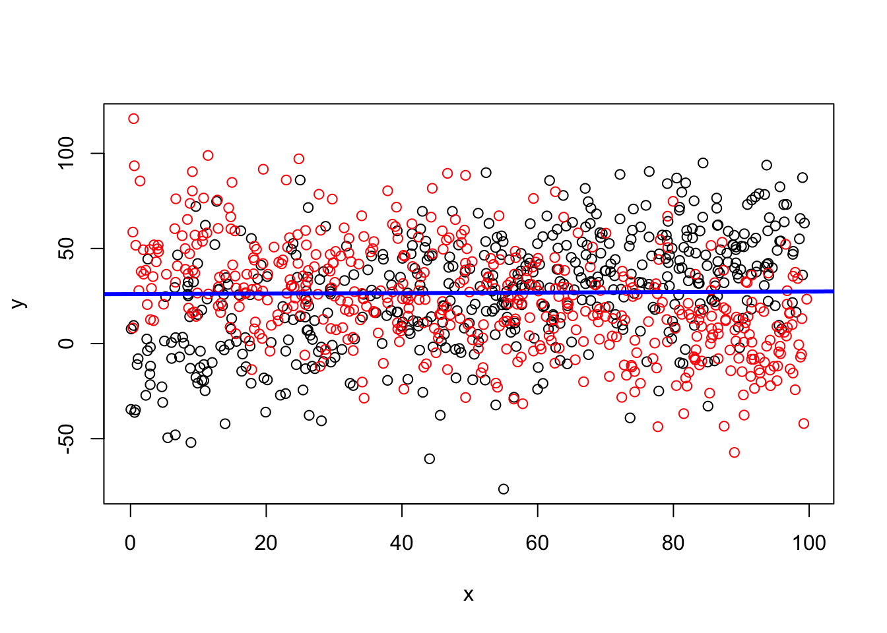
10.5.3 With interaction
model_3 <- lm(y~x*f, data=my_data.df)
summary(model_3)##
## Call:
## lm(formula = y ~ x * f, data = my_data.df)
##
## Residuals:
## Min 1Q Median 3Q Max
## -103.904 -15.541 -0.708 15.961 73.907
##
## Coefficients:
## Estimate Std. Error t value Pr(>|t|)
## (Intercept) -0.70302 2.40343 -0.293 0.77
## x 0.51139 0.03973 12.870 <2e-16 ***
## fB 47.02536 3.29519 14.271 <2e-16 ***
## x:fB -0.96733 0.05539 -17.464 <2e-16 ***
## ---
## Signif. codes: 0 '***' 0.001 '**' 0.01 '*' 0.05 '.' 0.1 ' ' 1
##
## Residual standard error: 24.79 on 996 degrees of freedom
## Multiple R-squared: 0.2377, Adjusted R-squared: 0.2354
## F-statistic: 103.5 on 3 and 996 DF, p-value: < 2.2e-16plot(model_3)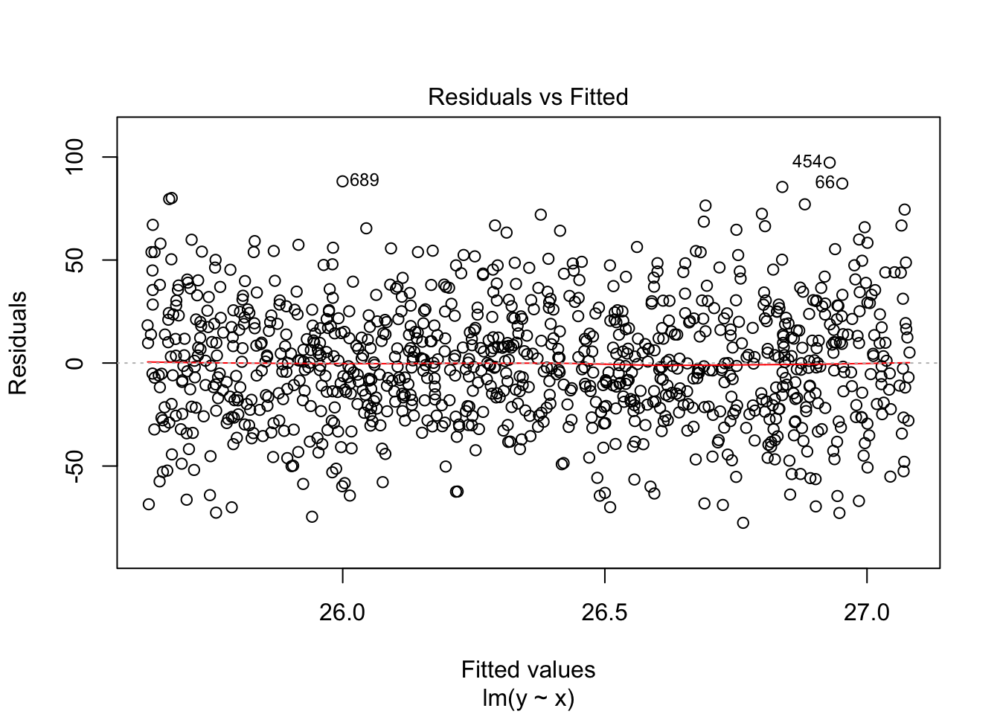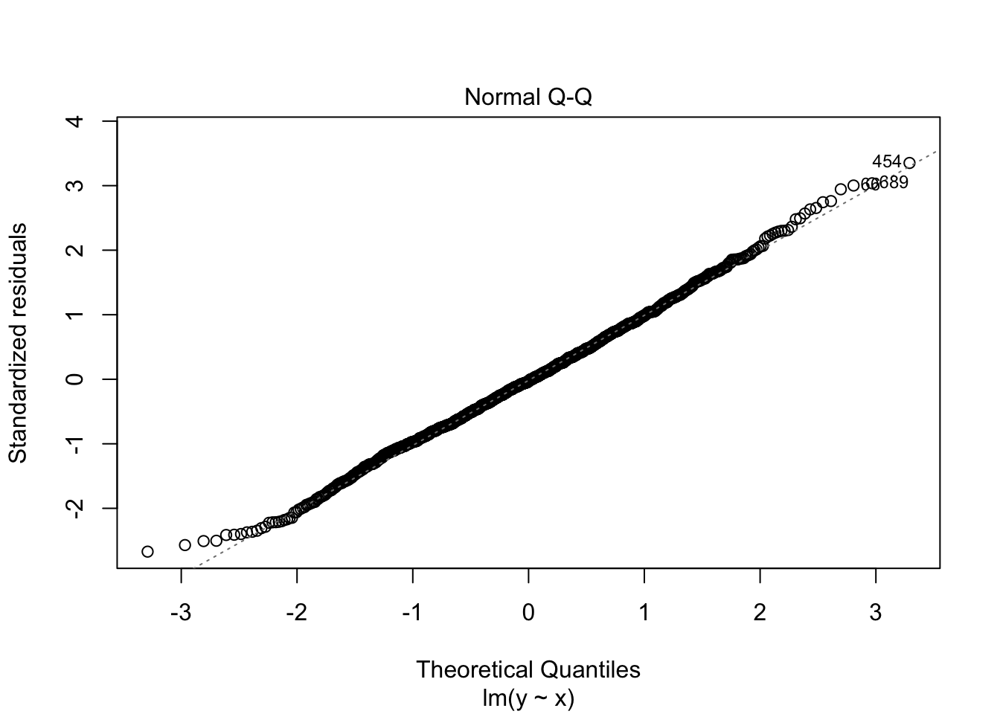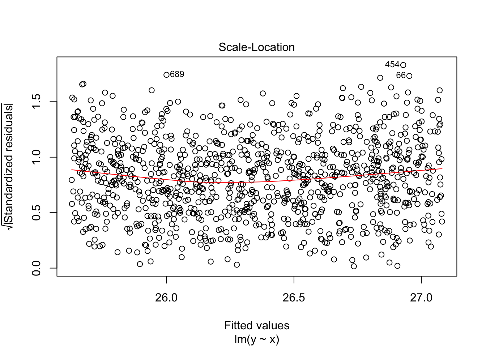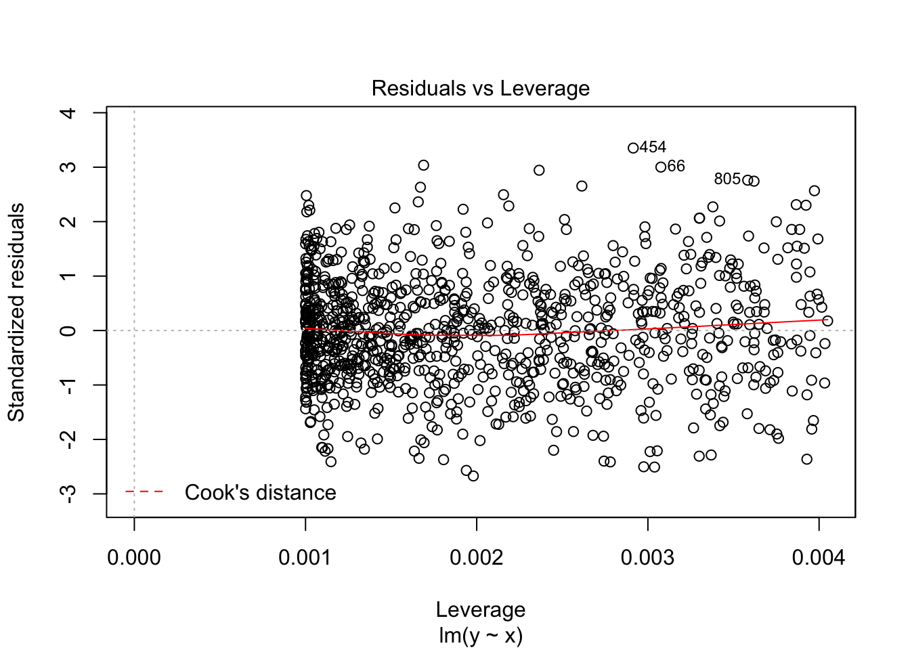
plot(y~x,col=as.integer(f),data=my_data.df)
abline(model_3, col="blue", lwd=3)## Warning in abline(model_3, col = "blue", lwd = 3): only using the first two of 4
## regression coefficients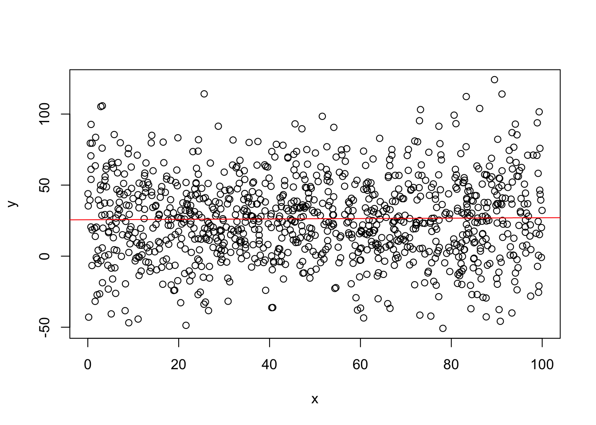
10.6 lm could be evaluated by ANOVA
Anova output may be more clear when categorical variables have more than 3 levels (we discussed it during the practical session)
Note that there are at least two slightly different functions for ANOVA in R: anova() and aov()
anova(model_1)## Analysis of Variance Table
##
## Response: y
## Df Sum Sq Mean Sq F value Pr(>F)
## x 1 225 225.04 0.2797 0.597
## Residuals 998 802885 804.49anova(model_2)## Analysis of Variance Table
##
## Response: y
## Df Sum Sq Mean Sq F value Pr(>F)
## x 1 225 225.0 0.2806 0.59645
## f 1 3178 3177.7 3.9616 0.04682 *
## Residuals 997 799707 802.1
## ---
## Signif. codes: 0 '***' 0.001 '**' 0.01 '*' 0.05 '.' 0.1 ' ' 1anova(model_3)## Analysis of Variance Table
##
## Response: y
## Df Sum Sq Mean Sq F value Pr(>F)
## x 1 225 225 0.3661 0.5453
## f 1 3178 3178 5.1695 0.0232 *
## x:f 1 187470 187470 304.9811 <2e-16 ***
## Residuals 996 612236 615
## ---
## Signif. codes: 0 '***' 0.001 '**' 0.01 '*' 0.05 '.' 0.1 ' ' 110.6.1 Anova could be used to compare models
This can be used in the following way:
- First a “null” model could be calculated with all the “confounders”/“covariates”
- Then a predictor of interest is added to the model and models are compared by ANOVA
- If the model is improved significantly, then the predictor is important
anova(model_1,model_3)## Analysis of Variance Table
##
## Model 1: y ~ x
## Model 2: y ~ x * f
## Res.Df RSS Df Sum of Sq F Pr(>F)
## 1 998 802885
## 2 996 612236 2 190648 155.08 < 2.2e-16 ***
## ---
## Signif. codes: 0 '***' 0.001 '**' 0.01 '*' 0.05 '.' 0.1 ' ' 1anova(model_1,model_2,model_3)## Analysis of Variance Table
##
## Model 1: y ~ x
## Model 2: y ~ x + f
## Model 3: y ~ x * f
## Res.Df RSS Df Sum of Sq F Pr(>F)
## 1 998 802885
## 2 997 799707 1 3178 5.1695 0.0232 *
## 3 996 612236 1 187470 304.9811 <2e-16 ***
## ---
## Signif. codes: 0 '***' 0.001 '**' 0.01 '*' 0.05 '.' 0.1 ' ' 110.6.2 A bit of OOP about anova(lm)
# What other methods could be applied to lm object?
class(model_1)## [1] "lm"methods(class="lm")## [1] add1 alias anova case.names coerce
## [6] confint cooks.distance deviance dfbeta dfbetas
## [11] drop1 dummy.coef effects extractAIC family
## [16] formula fortify hatvalues influence initialize
## [21] kappa labels logLik model.frame model.matrix
## [26] nobs plot predict print proj
## [31] qqnorm qr residuals rstandard rstudent
## [36] show simulate slotsFromS3 summary variable.names
## [41] vcov
## see '?methods' for accessing help and source code# What other classes coul be evaluated by ANOVA?
methods(anova)## [1] anova.gam* anova.glm* anova.glmlist* anova.gls* anova.lm*
## [6] anova.lme* anova.lmlist* anova.loess* anova.mlm* anova.nls*
## see '?methods' for accessing help and source code#?aov
#?anova
#?anova.lm10.7 Predict
new_data.df <- data.frame(x=c(10,20), f=factor(c("A","B")))
new_data.df## x f
## 1 10 A
## 2 20 Bpredict(model_1,new_data.df)## 1 2
## 24.23021 24.39751predict(model_2,new_data.df)## 1 2
## 26.14665 22.7132110.8 Update
It is very rarely used, but occasionally could be seen in help and tutorials
Note using dots on the left and right of ~ in the formula
m1 = lm(y~x, data=my_data.df)
summary(m1)##
## Call:
## lm(formula = y ~ x, data = my_data.df)
##
## Residuals:
## Min 1Q Median 3Q Max
## -101.476 -19.094 0.934 19.528 94.194
##
## Coefficients:
## Estimate Std. Error t value Pr(>|t|)
## (Intercept) 24.06291 1.88081 12.794 <2e-16 ***
## x 0.01673 0.03163 0.529 0.597
## ---
## Signif. codes: 0 '***' 0.001 '**' 0.01 '*' 0.05 '.' 0.1 ' ' 1
##
## Residual standard error: 28.36 on 998 degrees of freedom
## Multiple R-squared: 0.0002802, Adjusted R-squared: -0.0007215
## F-statistic: 0.2797 on 1 and 998 DF, p-value: 0.597m2 = update(m1,.~.+f, data=my_data.df)
summary(m2)##
## Call:
## lm(formula = y ~ x + f, data = my_data.df)
##
## Residuals:
## Min 1Q Median 3Q Max
## -103.252 -18.959 0.964 19.444 95.818
##
## Coefficients:
## Estimate Std. Error t value Pr(>|t|)
## (Intercept) 26.01050 2.11764 12.283 <2e-16 ***
## x 0.01361 0.03162 0.431 0.6669
## fB -3.56959 1.79341 -1.990 0.0468 *
## ---
## Signif. codes: 0 '***' 0.001 '**' 0.01 '*' 0.05 '.' 0.1 ' ' 1
##
## Residual standard error: 28.32 on 997 degrees of freedom
## Multiple R-squared: 0.004237, Adjusted R-squared: 0.002239
## F-statistic: 2.121 on 2 and 997 DF, p-value: 0.120410.9 Crooked things yet to explore …
We could not discuss these because we were short of time (and I have limited understanding of them ?)
10.9.1 Intercept, design matrix
See my PowerPoint slides for students with biological background
Intercept could be set to zero by two ways:
- y ~ 0 + x
- y ~ x - 1
Something strange happens without intercept in the model. This something could be undertood by staring at “design matrix”
m1 <- lm(y~x+f, data=my_data.df)
summary(m1)##
## Call:
## lm(formula = y ~ x + f, data = my_data.df)
##
## Residuals:
## Min 1Q Median 3Q Max
## -103.252 -18.959 0.964 19.444 95.818
##
## Coefficients:
## Estimate Std. Error t value Pr(>|t|)
## (Intercept) 26.01050 2.11764 12.283 <2e-16 ***
## x 0.01361 0.03162 0.431 0.6669
## fB -3.56959 1.79341 -1.990 0.0468 *
## ---
## Signif. codes: 0 '***' 0.001 '**' 0.01 '*' 0.05 '.' 0.1 ' ' 1
##
## Residual standard error: 28.32 on 997 degrees of freedom
## Multiple R-squared: 0.004237, Adjusted R-squared: 0.002239
## F-statistic: 2.121 on 2 and 997 DF, p-value: 0.1204m2 <- lm(y~x+f-1, data=my_data.df)
summary(m2)##
## Call:
## lm(formula = y ~ x + f - 1, data = my_data.df)
##
## Residuals:
## Min 1Q Median 3Q Max
## -103.252 -18.959 0.964 19.444 95.818
##
## Coefficients:
## Estimate Std. Error t value Pr(>|t|)
## x 0.01361 0.03162 0.431 0.667
## fA 26.01050 2.11764 12.283 <2e-16 ***
## fB 22.44091 2.04721 10.962 <2e-16 ***
## ---
## Signif. codes: 0 '***' 0.001 '**' 0.01 '*' 0.05 '.' 0.1 ' ' 1
##
## Residual standard error: 28.32 on 997 degrees of freedom
## Multiple R-squared: 0.4388, Adjusted R-squared: 0.4371
## F-statistic: 259.8 on 3 and 997 DF, p-value: < 2.2e-16m3 <- lm(y~0+x+f, data=my_data.df)
summary(m3)##
## Call:
## lm(formula = y ~ 0 + x + f, data = my_data.df)
##
## Residuals:
## Min 1Q Median 3Q Max
## -103.252 -18.959 0.964 19.444 95.818
##
## Coefficients:
## Estimate Std. Error t value Pr(>|t|)
## x 0.01361 0.03162 0.431 0.667
## fA 26.01050 2.11764 12.283 <2e-16 ***
## fB 22.44091 2.04721 10.962 <2e-16 ***
## ---
## Signif. codes: 0 '***' 0.001 '**' 0.01 '*' 0.05 '.' 0.1 ' ' 1
##
## Residual standard error: 28.32 on 997 degrees of freedom
## Multiple R-squared: 0.4388, Adjusted R-squared: 0.4371
## F-statistic: 259.8 on 3 and 997 DF, p-value: < 2.2e-16data("mtcars")
other_data <- mtcars[1:10,c("vs","am","gear")]
other_data## vs am gear
## Mazda RX4 0 1 4
## Mazda RX4 Wag 0 1 4
## Datsun 710 1 1 4
## Hornet 4 Drive 1 0 3
## Hornet Sportabout 0 0 3
## Valiant 1 0 3
## Duster 360 0 0 3
## Merc 240D 1 0 4
## Merc 230 1 0 4
## Merc 280 1 0 4model.matrix(~am+gear, data=other_data)## (Intercept) am gear
## Mazda RX4 1 1 4
## Mazda RX4 Wag 1 1 4
## Datsun 710 1 1 4
## Hornet 4 Drive 1 0 3
## Hornet Sportabout 1 0 3
## Valiant 1 0 3
## Duster 360 1 0 3
## Merc 240D 1 0 4
## Merc 230 1 0 4
## Merc 280 1 0 4
## attr(,"assign")
## [1] 0 1 2model.matrix(~0+am+gear, data=other_data)## am gear
## Mazda RX4 1 4
## Mazda RX4 Wag 1 4
## Datsun 710 1 4
## Hornet 4 Drive 0 3
## Hornet Sportabout 0 3
## Valiant 0 3
## Duster 360 0 3
## Merc 240D 0 4
## Merc 230 0 4
## Merc 280 0 4
## attr(,"assign")
## [1] 1 210.9.2 Contrasts
Also, there is some cryptic way allowing to specify what sub-groups to include/exclude in the comparison: this is something to do with “contrasts”
https://rcompanion.org/rcompanion/h_01.html
https://stats.stackexchange.com/questions/64249/creating-contrast-matrix-for-linear-regression-in-r
contrasts(my_data.df$f)## B
## A 0
## B 1contrasts(as.factor(other_data$gear))## 4
## 3 0
## 4 110.9.3 Type I, II and III sums
ANOVA and linear models are, in fact equivalent to each other (even at the level of implementation). Both rely on calculating some sum of squares. There are 3 ways of calculating these sums: Type I, Type II and Type III
Google about these …